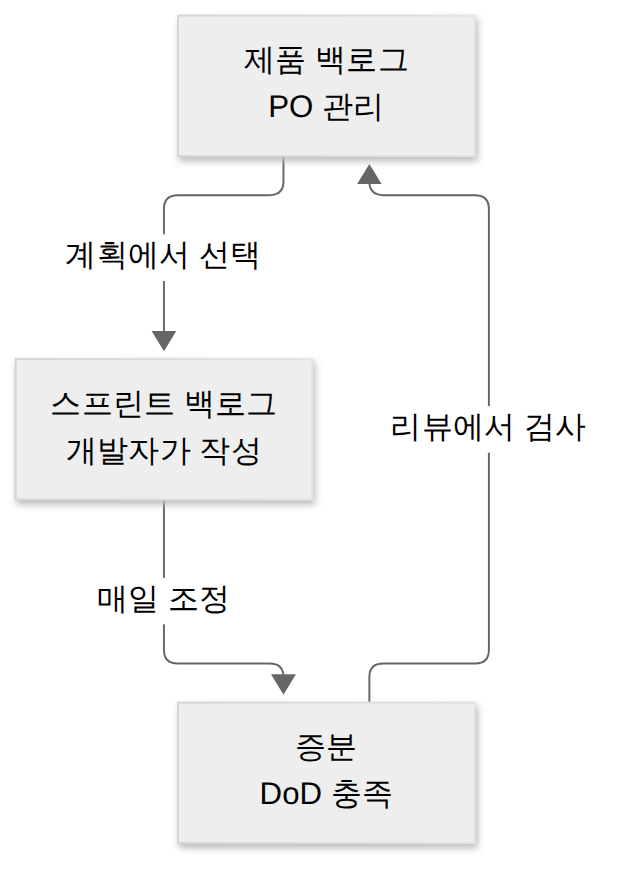

S01 · 스크럼 집중 정리 — 스프린트 계획 vs 일일 스크럼
보충A1 스크럼 문제, 특히 일일 스크럼 ↔ 스프린트 계획에서 같은 답을 계속 고르고 있어요(D009-4: 처음에도, 10/20 재확인에서도 ‘스프린트 계획’). 순서를 외워도 계속 틀린다는 건 지식이 아니라 문제를 읽는 습관이 걸린다는 뜻이에요. 이 페이지는 스크럼만 따로 떼어 처음부터 다시 쌓고, 왜 자꾸 ‘계획’으로 손이 가는지 그 원인부터 잡아요.
- 스크럼 이벤트 5개를 언제·얼마나·누가·무엇을 기준으로 구별할 수 있다
- 문제에 “계획”이라는 낱말이 나와도 스프린트 계획과 일일 스크럼을 범위(스프린트 전체 vs 다음 24시간)로 가를 수 있다
- 스프린트 리뷰(제품 검사)와 스프린트 회고(일하는 방식 개선)를 구별할 수 있다
- 역할 3·산출물 3을 이벤트와 연결해 설명할 수 있다
1. 왜 자꾸 ‘스프린트 계획’을 고를까
D009-4 원래 문제와 D018 4번 재확인 문제에는 공통으로 이 문장이 들어 있었어요. “다음 24시간의 작업 계획을 조정하는 스크럼 이벤트는?” 정답은 일일 스크럼인데, 두 번 다 스프린트 계획을 골랐어요. 아마 눈이 문장 끝의 “계획”에 먼저 걸리고, 선지에 같은 낱말이 들어간 “스프린트 계획”이 보이니 손이 거기로 간 거예요. 출제자 입장에서는 일부러 놓은 미끼예요. 정답의 설명문에 오답의 이름을 섞어 두면, 아는 사람도 반쯤은 걸리거든요.
사실 일일 스크럼도 “계획”을 해요. 다만 범위가 하루예요. 스프린트 계획은 스프린트 전체(최대 1개월)를 시작할 때 한 번 세우는 큰 계획이고, 일일 스크럼은 그 큰 계획을 따라가다가 매일 아침 “오늘 하루는 이렇게 가자”고 조정하는 거예요. 그래서 문제에서 “계획”을 보면, 그 계획이 어느 범위인지 붙어 있는 말을 찾아야 해요. “매일”, “15분”, “24시간”이 붙어 있으면 일일 스크럼, “스프린트를 시작할 때”, “스프린트 목표”, “백로그 항목 선택”이 붙어 있으면 스프린트 계획이에요.
2. 스크럼의 뼈대 — 스프린트라는 그릇
스크럼은 애자일을 실제로 굴리는 가장 대표적인 관리 프레임워크예요. 코딩 기법(짝 프로그래밍, TDD 같은 건 XP)은 정하지 않고, “누가(역할) 무엇을 가지고(산출물) 언제 모이나(이벤트)”만 정해요. 이렇게 최소한만 정한 이유는, 요구가 계속 바뀌는 환경에서는 긴 계획보다 짧게 만들고 자주 확인하는 리듬이 더 중요하기 때문이에요. 스크럼이 기대는 세 기둥도 그 리듬을 위한 거예요. 일을 다 보이게 하고(투명성), 자주 들여다보고(검사), 문제가 보이면 바로 고친다(적응).
그 리듬의 단위가 스프린트예요. 스프린트는 1개월 이하의 고정된 기간으로, 이 안에서 사용 가능한 결과물(증분)을 하나 만들어요. 그리고 다른 네 이벤트(계획·일일 스크럼·리뷰·회고)는 모두 스프린트 안에 들어 있어요. 그래서 스프린트를 “나머지 이벤트를 담는 그릇”이라고 불러요. 한 스프린트가 끝나면 쉬는 날 없이 바로 다음 스프린트가 시작돼요. 사내 메신저에서 “이번 스프린트 끝나면 좀 쉬죠”라는 말이 공허하게 들리는 이유가 이거예요.
그림에서 주황 칸만 화살표가 제자리로 돌아오는 게 보이죠. 다섯 이벤트 중 스프린트 안에서 여러 번 하는 건 일일 스크럼 하나뿐이에요. 이걸 한 번 더 달력으로 놓고 보면 훨씬 선명해요.
3. 이벤트 다섯 개 — 시간 순서대로
이제 각 이벤트를 하나씩 봐요. 시험이 묻는 건 거의 항상 같은 네 가지예요. 언제 하나, 얼마나 하나(타임박스), 누가 하나, 무엇을 결과로 내나. 아래 시간은 1개월 스프린트 기준 최대치이고, 스프린트가 짧으면 보통 더 짧아져요.
① 스프린트 계획 (Sprint Planning) — 시작할 때 1번, 최대 8시간
스프린트를 여는 이벤트예요. 스크럼 팀 전체(PO·SM·개발자)가 모여 세 가지 질문에 답해요. 왜 이 스프린트가 가치 있나(→ 스프린트 목표), 무엇을 할 수 있나(→ 제품 백로그에서 이번에 할 항목 선택), 어떻게 할까(→ 항목을 하루 이하 크기 작업으로 쪼개는 실행 계획). 이 세 답을 묶은 게 스프린트 백로그예요. 요약하면 “한 달 치 계획을 처음에 한 번”이에요. 넷플릭스 시즌 1 기획 회의라고 생각하면 돼요. 매일 하는 회의가 아니에요.
② 일일 스크럼 (Daily Scrum) — 매일, 15분
스프린트 동안 매일 같은 시간·같은 장소에서 15분 동안 하는 이벤트예요. 주인공은 개발자예요. 스프린트 목표를 향해 잘 가고 있는지 점검하고, 필요하면 스프린트 백로그를 손보면서 다음 24시간의 계획을 조정해요. 진행 상황과 장애물을 공유하는 자리이기도 해요. 흔히 “스탠드업 미팅”이라고 부르는 그거예요. 문제 해결은 여기서 길게 하지 않고, 필요한 사람만 끝나고 따로 모여요. 15분짜리 회의가 40분이 되는 순간 그건 이미 일일 스크럼이 아니라는 게 공식 입장이에요(현실과는 별개로요).
③ 스프린트 리뷰 (Sprint Review) — 끝날 무렵, 최대 4시간
스프린트에서 만든 결과물(증분)을 이해관계자에게 보여 주고 함께 검사하는 이벤트예요. 단순 발표회가 아니라, 결과를 보고 “그럼 다음엔 뭘 하는 게 좋을까”를 같이 논의해서 제품 백로그를 조정하는 작업 회의예요. 질문은 “무엇을 만들었나”예요.
④ 스프린트 회고 (Sprint Retrospective) — 맨 마지막, 최대 3시간
스프린트의 마지막 이벤트예요. 이번엔 제품이 아니라 팀이 일한 방식을 돌아봐요. 사람 사이의 소통, 프로세스, 도구, 완료 정의(DoD)까지 살펴서 무엇이 잘 됐고 무엇을 고칠지 정하고, 가장 도움이 될 개선점을 다음 스프린트에 반영해요. 질문은 “어떻게 일했나”예요. 회고에서 “다들 고생했어요”만 하고 끝나면, 그건 회고가 아니라 회식 예고편이에요.
⑤ 스프린트 (Sprint) — 위 넷을 담는 그릇, 1개월 이하
앞에서 본 대로 고정 길이 기간이에요. 스프린트 중에는 스프린트 목표를 흔드는 변경을 하지 않고, 품질 기준을 낮추지 않아요. 스프린트 목표가 쓸모없어지면 스프린트를 취소할 수 있는데, 그 권한은 PO에게만 있어요. 참고로 백로그 정제(refinement)는 공식 이벤트가 아니라 수시로 하는 활동이에요.
4. 가장 많이 틀린 짝 — 계획 vs 일일 스크럼, 리뷰 vs 회고
앞 섹션에서 다섯 개를 따로 봤으니, 이제 헷갈리는 둘씩 붙여서 봐요. 먼저 오답의 주범인 계획 vs 일일 스크럼이에요. 둘 다 “계획”을 하지만, 하나는 스프린트 전체를 한 번, 하나는 다음 하루를 매일이에요. 망원경과 현미경 차이라고 생각하면 돼요.
리뷰와 회고도 둘 다 스프린트 끝에 붙어 있어서 섞여요. 가르는 질문은 “무엇을 들여다보나”예요. 제품(결과물)을 보면 리뷰, 팀(일하는 방식)을 보면 회고예요. 리뷰엔 이해관계자가 오고, 회고는 스크럼 팀끼리 해요.
5. 역할 3·산출물 3 — 이벤트와 엮어서
이벤트를 정리했으면, 그 이벤트에서 누가 무엇을 들고 나오는지 연결해야 문제가 풀려요. 스크럼 팀은 세 역할로 이뤄져요. 제품 책임자(PO)는 제품 가치를 극대화하는 사람으로, 제품 백로그 항목을 쓰고 순서(우선순위)를 결정해요(D003에서 맞혔던 그 문제). 스크럼 마스터(SM)는 스크럼이 잘 돌아가도록 팀을 코칭하고 장애물을 제거하는 섬기는 리더예요. 지시하는 관리자가 아니라는 점이 단골 함정이에요. 개발자는 스프린트 백로그를 만들고 매 스프린트 증분을 완성해요(2020 가이드 전에는 “개발팀”).
산출물도 이벤트와 짝이 있어요. 제품 백로그(PO가 관리하는 제품 전체 할 일 목록, 약속 = 제품 목표)에서 스프린트 계획 때 이번에 할 것을 뽑으면 스프린트 백로그(개발자가 관리, 약속 = 스프린트 목표)가 되고, 일일 스크럼으로 매일 조정하며 만든 결과가 증분(약속 = 완료 정의 DoD)이에요. 증분은 리뷰에서 검사받고, 그 결과로 제품 백로그가 다시 조정돼요.

마지막으로 진행 상황을 보여 주는 도구 번다운 차트도 함께 나와요. 가로축이 시간, 세로축이 남은 작업량이라 선이 오른쪽 아래로 타고 내려가요(burn down).
6. 문제 단서 → 정답 한 장 정리
한 장 요약 — 위에서 설명한 이벤트들을 문제에 자주 나오는 단서로 다시 묶었어요. 왼쪽 단서를 문제에서 찾으면 오른쪽이 답이에요. 특히 첫 두 줄은 “계획”이라는 같은 낱말을 쓰니 범위 단어로 가르세요.
| 문제 속 단서 | 정답 | 언제·얼마나 |
|---|---|---|
| 매일 · 15분 · 다음 24시간 계획 조정 · 진척·장애 공유 | 일일 스크럼 | 매일, 15분 |
| 스프린트 시작 · 스프린트 목표 · 백로그 항목 선택 · 왜/무엇/어떻게 | 스프린트 계획 | 시작 1번, 최대 8시간 |
| 증분(결과물) 검사 · 이해관계자 · 제품 백로그 조정 | 스프린트 리뷰 | 끝 무렵, 최대 4시간 |
| 일하는 방식·프로세스·도구 개선 · 마지막 이벤트 | 스프린트 회고 | 맨 끝, 최대 3시간 |
| 1개월 이하 고정 기간 · 다른 이벤트를 담음 | 스프린트 | 1개월 이하 |
| 백로그 순서 결정 · 스프린트 취소 권한 | 제품 책임자(PO) | — |
| 장애물 제거 · 코칭 · 섬기는 리더 | 스크럼 마스터 | — |
연습 문제 (채점 완료 · 6/6)
스크럼만 6문제예요. 1·2·5번이 계획 vs 일일 스크럼을 다른 각도에서 물어요. 문제를 읽을 때 “계획”보다 범위 단어에 먼저 동그라미를 쳐 보세요.
- 스크럼 팀이 스프린트를 시작하면서 이번 스프린트의 목표를 정하고, 제품 백로그에서 이번에 다룰 항목을 골라 실행 계획을 세우는 이벤트는?
정답·해설
② 스프린트 계획. “시작하면서·스프린트 목표·백로그 항목 선택”이 단서예요. - 개발자들이 매일 같은 시간에 모여 15분 동안 스프린트 목표를 향한 진척을 점검하고, 다음 24시간 동안의 작업 계획을 조정하는 이벤트는?
정답·해설
③ 일일 스크럼. “매일·15분·다음 24시간” — ‘계획’이라는 낱말에 안 걸렸어요. - 스프린트에서 만든 결과물(증분)을 이해관계자와 함께 검사하고, 그 결과를 바탕으로 제품 백로그를 조정하는 이벤트는?
정답·해설
① 스프린트 리뷰. 결과물(증분)을 이해관계자와 검사하고 제품 백로그를 조정해요. - 스프린트의 마지막에 팀이 사람·프로세스·도구 측면에서 일한 방식을 돌아보고 다음 스프린트의 개선점을 정하는 이벤트는?
정답·해설
④ 스프린트 회고. 마지막에 팀의 일하는 방식을 돌아봐요. - 스크럼 이벤트에 대한 설명으로 옳은 것은?
정답·해설
② 일일 스크럼은 다음 24시간 계획을 조정하는 자리예요. ①은 계획과 일일을, ③은 리뷰와 회고를 바꿔 놓았고, ④ 회고는 시작이 아니라 마지막이에요. - 스크럼에서 스프린트 목표가 쓸모없어졌을 때 스프린트를 취소할 수 있는 권한을 가진 역할은?
정답·해설
③ 제품 책임자(PO). 스프린트 취소 권한은 PO에게만 있어요.
고른 뒤 답안 복사 → 디스코드 공부 채널에 붙여넣기 하면 돼요.
답장: 정처기 S01: 1)번호 2)번호 3)번호 4)번호 5)번호 6)번호